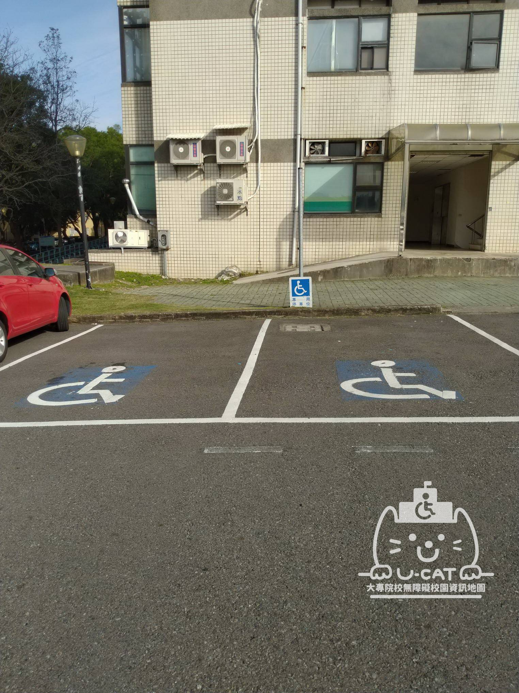
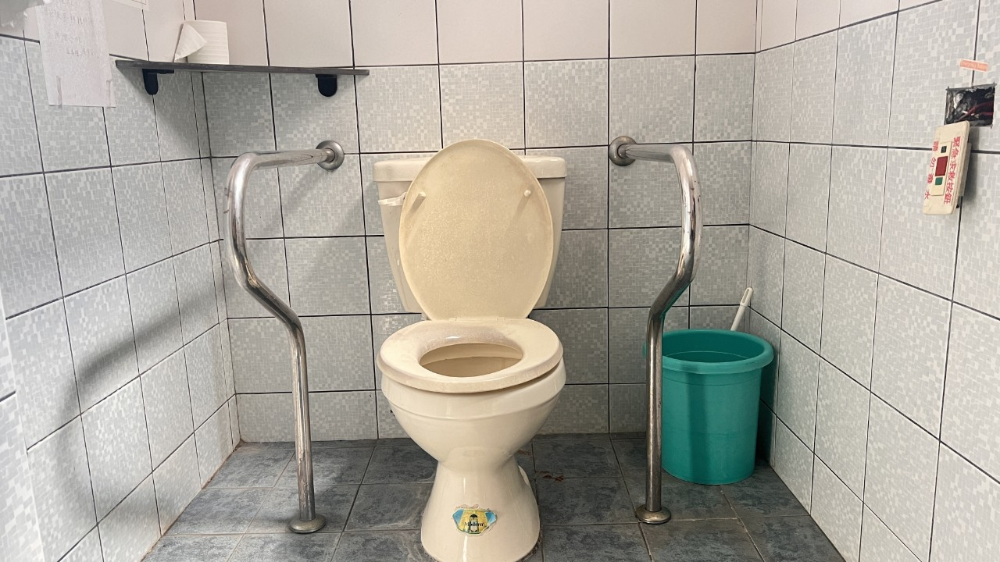
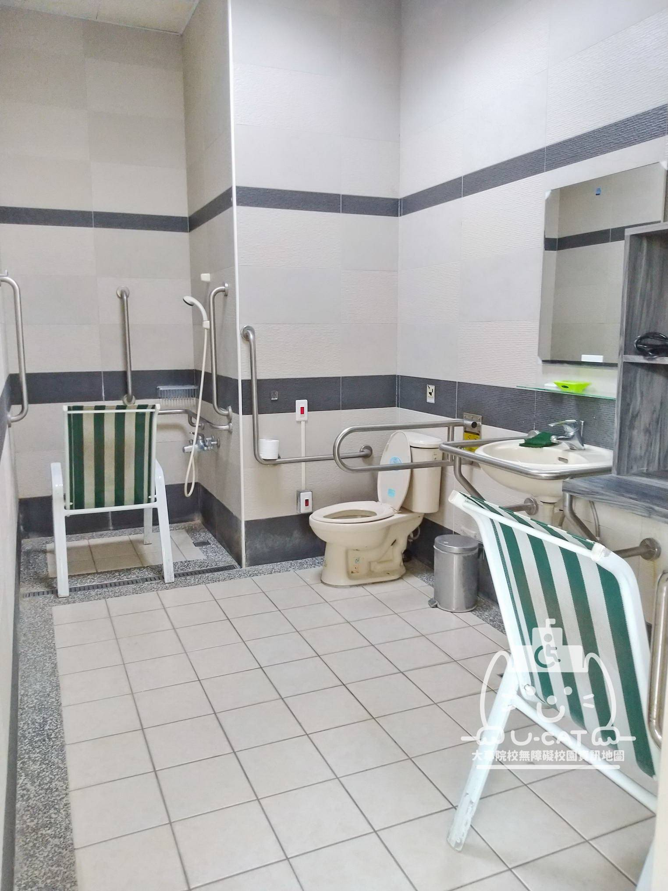
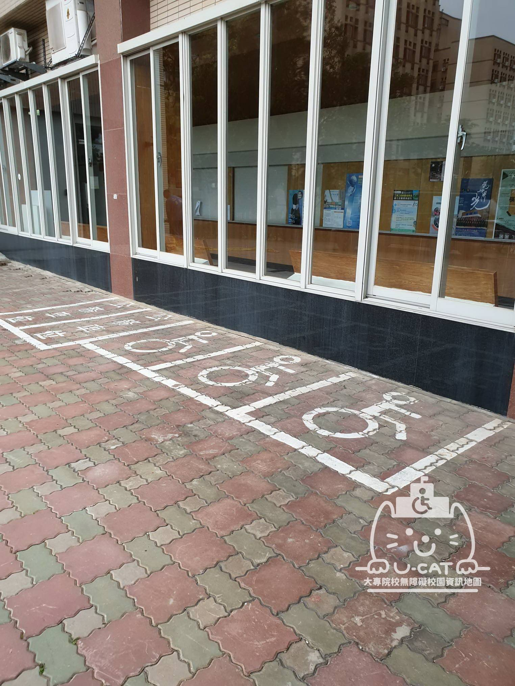

認識友善校園 尋找大專院校的無障礙設施資訊無障礙地圖以使用者的角度出發提供無障礙師生友善資訊服務 了解更多 輕鬆尋找大專院校校園無障礙設施資訊 尋找大專院校的無障礙設施資訊無障礙地圖以使用者的角度出發提供無障礙師生友善資訊服務 了解更多 輕鬆尋找大專院校校園無障礙設施資訊 尋找大專院校的無障礙設施資訊無障礙地圖以使用者的角度出發提供無障礙師生友善資訊服務 了解更多 輕鬆尋找大專院校校園無障礙設施資訊 尋找大專院校的無障礙設施資訊無障礙地圖以使用者的角度出發提供無障礙師生友善資訊服務 了解更多
停車位 無障礙停車位應設於最靠近建築物無障礙出入口或無障礙昇降機之便捷處。並應於車道入口處及車道沿路轉彎處設置明顯之指引標誌，引導無障礙停車之方向及位置。入口引導標誌應與行進方向垂直，以利辨識。  了解更多
一般男廁 無障礙停車位應設於最靠近建築物無障礙出入口或無障礙昇降機之便捷處。並應於車道入口處及車道沿路轉彎處設置明顯之指引標誌，引導無障礙停車之方向及位置。入口引導標誌應與行進方向垂直，以利辨識。  了解更多
浴室 無障礙停車位應設於最靠近建築物無障礙出入口或無障礙昇降機之便捷處。並應於車道入口處及車道沿路轉彎處設置明顯之指引標誌，引導無障礙停車之方向及位置。入口引導標誌應與行進方向垂直，以利辨識。  了解更多
觀眾席 無障礙停車位應設於最靠近建築物無障礙出入口或無障礙昇降機之便捷處。並應於車道入口處及車道沿路轉彎處設置明顯之指引標誌，引導無障礙停車之方向及位置。入口引導標誌應與行進方向垂直，以利辨識。 了解更多
室外出入口 無障礙停車位應設於最靠近建築物無障礙出入口或無障礙昇降機之便捷處。並應於車道入口處及車道沿路轉彎處設置明顯之指引標誌，引導無障礙停車之方向及位置。入口引導標誌應與行進方向垂直，以利辨識。 了解更多
無障礙寢室 無障礙停車位應設於最靠近建築物無障礙出入口或無障礙昇降機之便捷處。並應於車道入口處及車道沿路轉彎處設置明顯之指引標誌，引導無障礙停車之方向及位置。入口引導標誌應與行進方向垂直，以利辨識。 了解更多
其他設施 無障礙停車位應設於最靠近建築物無障礙出入口或無障礙昇降機之便捷處。並應於車道入口處及車道沿路轉彎處設置明顯之指引標誌，引導無障礙停車之方向及位置。入口引導標誌應與行進方向垂直，以利辨識。 了解更多
機車停車位 無障礙停車位應設於最靠近建築物無障礙出入口或無障礙昇降機之便捷處。並應於車道入口處及車道沿路轉彎處設置明顯之指引標誌，引導無障礙停車之方向及位置。入口引導標誌應與行進方向垂直，以利辨識。  了解更多